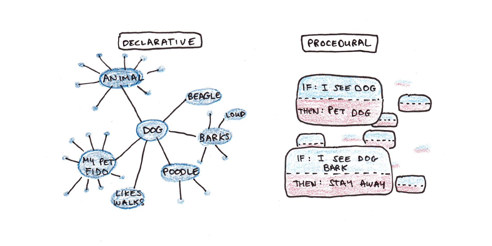
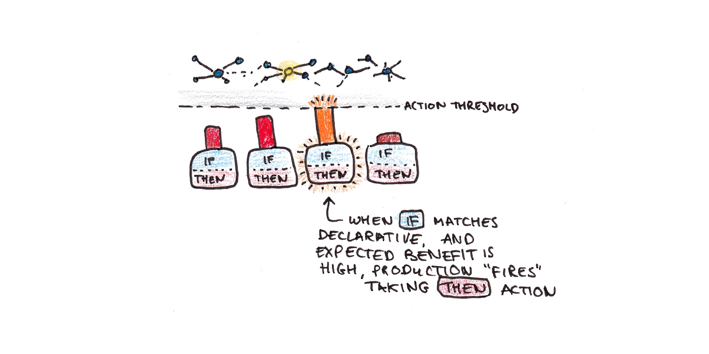

How Humans Learn
Cognitive effort is not a bug—it’s the feature
23 June, 2025
What You Just Experienced
Your Three Research Modes:
| Research Mode | Description | How did it feel? |
|---|---|---|
| Without AI | Classical sources | Slower, effortful, uncertain |
| Single AI Prompt | One question | Fast, confident, comprehensive |
| Collaborative AI | Iterative questions | Engaging, interactive, refined |
The Critical Question:
Which mode will you remember and transfer a week from now?
The immediate “feel” doesn’t predict long-term learning…
Why Schools Exist: The Knowledge Divide
🧬 Biologically Primary
We evolved to learn:
- Speaking & understanding
- Recognizing faces
- Reading social cues
- Basic problem solving
Natural discovery works!
🎓 Biologically Secondary
We didn’t evolve to learn:
- Reading & writing
- Mathematics & algebra
- Programming & analysis
- Scientific reasoning
Needs explicit teaching & struggle!
Primary knowledge can be learned through natural discovery, while academic skills require explicit instruction and structured practice.
How Expertise Actually Develops
The Brain’s Learning System:
| Memory Type | Description | Characteristics | Example |
|---|---|---|---|
| 🧠 Declarative Memory | “Knowing That” | • Facts and rules you hold consciously • Slow, effortful retrieval |
“To solve \(3x + 5 = 20\), subtract \(5\) from both sides” |
| ⚡ Procedural Memory | “Knowing How” | • Automatic “atomic thinking steps” • Fast, effortless execution |
See \(3x + 5 = 20\) → instantly know \(x = 5\) |
The journey: Facts → Thousands of practice cycles → Automatic procedures → Expertise
Why struggle matters: Each practice attempt strengthens the neural pathways that create expertise

Figure courtesy of Scott H Young
The Weak-to-Strong Methods Journey
How novices become experts through progressive skill building:
| Stage | Description | Methods/Characteristics | Nature |
|---|---|---|---|
| 🌱 Weak Methods (Novice) | General strategies when lacking knowledge | • Means-end analysis • Working backward • Trial and error • Surface analogies • Hill climbing |
Slow, effortful, but essential for learning |
| 🔄 Proceduralization | Patterns become procedures | • Repeated sequences chunk together • Still conscious but more fluid • Reduced cognitive load • Faster with fewer errors |
The critical transition phase |
| ⚡ Strong Methods (Expert) | Domain-specific automaticity | • Pattern recognition • Forward chaining • Compiled procedures • Deep structural understanding |
Fast, accurate, unconscious |
Why This Matters for AI Use
AI provides expert-level answers (strong methods) to novices who haven’t developed through weak methods first. This skips the essential struggle phase where real learning occurs.
When novices use expert tools, they miss building the foundational procedures that enable true understanding.
Productions: Your Brain’s Atomic Thinking Steps
How Complex Skills Are Built:
Productions = IF-THEN Rules
- IF see \(3x + 5 = 20\) THEN subtract 5 from both sides
- IF stuck on code THEN check syntax first
- IF need to remember phone number THEN repeat internally
Each one is an “atomic thinking step”
Production Competition
When you see \(3x + 5 = 20\):
- Production A: “Guess and check” (weak)
- Production B: “Subtract 5” (strong)
- Winner: Strongest fires automatically
Practice strengthens winning productions
Why this matters:
Complex expertise = thousands of these atomic steps compiled together. Offloading provides final answers without building the atomic steps.

Figure courtesy of Scott H Young
The AI Bypass Problem
Three Ways Learning Is Disrupted:
| Issue | Problem | Consequence of offloading to AI |
|---|---|---|
| No Prediction Errors | Brain learns from gaps between “what I expect” and “what happens” | Eliminates this entirely |
| No Memory Formation | Information that isn’t actively processed isn’t stored | Provides answers without processing |
| No Procedural Development | Expertise requires thousands of “atomic thinking steps” | Skips this building process |
Result: Offloading cognitive processes can lead to surface fluency without deep understanding and complete dependency on tools.
The Research Reality
What Studies Show About AI Use in Learning:
- 68% reduction in critical thinking among high AI users
- Surface learning only in programming students using ChatGPT
- Flynn Effect reversal: IQ scores declining since we stopped memorizing
- Students can’t solve basic problems without AI after repeated AI-assisted attempts
We abandoned proven learning methods just as neuroscience proved why they work!
Evidence-Based Guidelines
- Embrace the Struggle
- Confusion is a necessary stage of learning
- Errors provide valuable prediction error signals
- Difficulty signals brain growth
- Practice Retrieval
- Test yourself before checking answers
- Explain concepts without notes
- Teach others what you’re learning
- Space Your Learning
- Return to concepts over days/weeks
- Allow forgetting between sessions
- Relearn in different contexts
- Vary Your Practice
- Mix problem types
- Change contexts
- Seek novel applications
- Protect Your Prediction Errors
- Make attempts before seeking help
- Notice when your expectations are wrong
- Use errors as learning opportunities, not failures
Teaching That Matches How Brains Learn
1. Respect the Developmental Sequence
- Weak methods must come first—they’re not a bug, they’re a feature
- Proceduralization requires extensive practice with deliberative processes
- Compilation happens automatically after sufficient repetition
2. Calibrate Cognitive Load
- Novices need simplified, sequential presentation
- Experts can handle complex, parallel processing
- The same material must be presented differently based on expertise level
3. Protect the Struggle Window
- Allow sufficient time for independent struggle before AI consultation
- Document thinking process before seeking external help
- Multiple attempts required before accessing solutions
4. Scaffold, Don’t Substitute
- Use AI to reduce irrelevant cognitive load, not eliminate all effort
- Provide worked examples that show the process, not just answers
- Gradually fade support as competence develops
The Key Insight:
AI is an expert-level tool. Using it before building foundational skills through weak methods isn’t just ineffective—it actively prevents the very processes that create expertise.
Design learning experiences that match how brains actually develop competence.

Berner Fachhochschule | Bern University of Applied Sciences